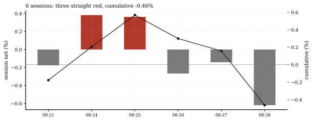
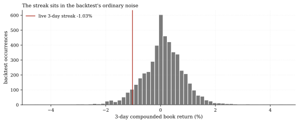
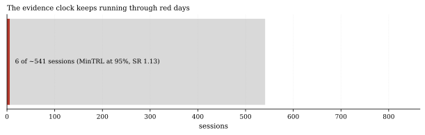

The one-paragraph version. The live ledger wrote its sixth session Friday, and it was the book's worst: -0.62% on the day, the third consecutive red session, taking the compounded streak to -1.03% and the cumulative return to -0.46% (NAV $995,369 against the $1.0M start). The machinery did exactly what it is built to do: the hash chain is valid, the kill stage stayed GREEN, and the drawdown sits 3.8% of the way from zero to the first latch at -27.2% (1.5x the backtest book's -18.1% max drawdown). For scale, the equal-weight 28-member backtest book saw 351 of 4,938 three-day windows end worse than this streak - the 7.1st percentile of ordinary noise - and its worst three-day run was -4.6%. The first drawdown is a rite of passage, not an event: here is the ledger reading it honestly.
How we worked this problem
This is Live Desk issue 2. Ledger facts come from the live engine's own status call - the same function that verifies the hash chain - plus the ledger CSV for per-row detail. The backtest reference is the equal-weight book of all 28 certified equity members (the live weights track member_weights_v1 across that library), and the drawdown-latch arithmetic uses the live engine's configured multiple (1.5x backtest max drawdown). The evidence clock re-runs the platform's canonical Minimum Track Record Length on the 28-member book's moments: the dial now reads 541 sessions (2.15 years) at the book's full-sample Sharpe of 1.13 - shorter than issue 1's 585 because the library grew from 20 to 28 members mid-cycle and the aggregate Sharpe rose with it.
The data audit
| Source | Coverage | As-of | Role |
|---|---|---|---|
data/loop/live/live_returns.csv | 6 hash-chained sessions | 2026-08-28 | ledger facts (via live_status) |
data/loop/library/*_T1.csv | 28 member net streams, 2007-2026 | 2026-08-24 | backtest book: streak distribution, MDD, Sharpe, MinTRL |
The FRED rates cache (as-of 2026-08-13) and the funding cache (as-of 2026-07-31) are not used. Fill counts come from the engine's deployment telemetry (16 orders, 0 rejected).
The external read
Drawdown governance is a live institutional topic: practitioner frameworks treat drawdown limits, de-risking rules and trend-horizon diversification as the standard toolkit (Alpha Architect - avoiding the big drawdown; Newfound Research - managing drawdowns with trend following). Our cross-check: the live book's design follows that playbook in miniature - a defensive multi-member library (the diversification leg), a hard drawdown latch (the limit leg) - and the first live drawdown lands where the backtest says such runs land: inside the ordinary three-day noise band, not at its edge.
Exhibits
Exhibit 1 - the six rows. Four of six sessions red (the first three were mixed: -0.18%, +0.38%, +0.36%, then the current -0.27%/-0.14%/-0.62% streak). Cumulative -0.46%; zero rejected orders throughout. One machinery item to watch, not bury: the ledger's tracking error - the RMS drift between target and realized member weights, a dimensionless weight number, not a return - jumped from 0.28% to 20.5% on August 25, the session the certified library grew from 20 to 28 members; the book has been carrying that elevated drift since, with the fill engine working the new targets down over time.

Exhibit 2 - the streak against its own history. The -1.03% three-day compound sits at the 7.1st percentile of the backtest book's 4,938 three-day windows; 351 windows were worse, the worst at -4.6%. A streak this size was always coming: the backtest logged 184 such episodes across 19.6 years - about nine a year.

Exhibit 3 - the clock through red days. Six sessions of the ~541 the canonical MinTRL demands at 95% confidence (1.1% of the dial). Red days count the same as green ones - that is the point of a process-based evidence standard.

So what - opportunities
- **The first drawdown validates the telemetry rather than the
- The percentile framing is reusable: every future Live Desk entry
- The latch arithmetic is now demonstrated end-to-end: drawdown
returns:** chain integrity, kill-stage reporting, drawdown accounting and order routing all executed on a bad day without intervention - the machinery an allocator would ask about, demonstrated on tape.
can quote the live streak's backtest percentile, turning raw red days into calibrated ones at no cost.
-1.03% against a -27.2% first latch leaves 96.2% of the distance in reserve - the number an allocator would want next to any drawdown headline.
So what - risks
- Three red days is a coincidence until it is not: the backtest's
- The drawdown is measured against a 6-row ledger: with so little
- The clock shortened for a book reason: 541 vs 585 sessions
worst three-day run was -4.6% (4.5x deeper); a streak at that scale would still be GREEN but would test the framing.
history, "first drawdown" is a description of the machinery, not a statistic about the strategy.
reflects the 28-member library's higher aggregate Sharpe (1.13 vs 1.09 on the 20-member cut, both keyed in this note); if live Sharpe disappoints the backtest's, the dial lengthens fast (roughly with the inverse square of realized Sharpe).
Machinery: how this piece was produced
articles/2026-08-28-live-desk-first-drawdown/analysis.py calls the live engine's live_status, reads the ledger CSV, builds the equal-weight 28-member book, computes the three-day streak percentile and latch arithmetic from the engine's configured multiple, and runs the canonical min_track_record_length for the clock. Every number above lands in assets/numbers.json; three figures render as SVG + PNG twins.
Reproduce with: ``bash .venv/Scripts/python articles/2026-08-28-live-desk-first-drawdown/analysis.py ``
Limitations
- Six rows: every statistic here describes the machinery, not
- The backtest reference is certification-time net streams (as-of
- Paper execution (SimBroker fills): real-venue slippage would widen
- The 3-day percentile uses overlapping windows (4,938 of them), which
performance; no signal is claimed in either direction.
2026-08-24); the live book's realized moments may drift from them.
the return-level costs; the 20.5% figure is WEIGHT drift (RMS across member weights after the 08-25 library migration), not a return gap.
autocorrelate; the percentile is a calibration guide, not a p-value.
Sources - external reading list
| Claim | Source |
|---|---|
| Drawdown-control toolkit: limits, de-risking rules, trend-horizon diversification | Alpha Architect - Big Drawdowns with Trend-Following |
| Structuring trend programs to manage drawdowns (protect-and-participate framing) | Newfound Research |
quantlab-live-engine; min-track-record-length; matplotlib